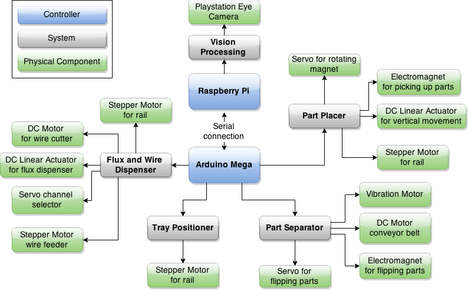

16-778, 18-578, 24-778 Spring 2015
Group G
Eric Newhall (enewhall)
Guillermo Cidre (gmcidre)
Christian Heaney-Secord (cheaneys)
Michael O'Connor (mkoconno)
Functional Architecture
Information containing part location and orientation must be continually determined and
transmitted continually. A part leaves the separator and arrives at the camera in one of
four possible orientations. Vision processing determine both when the part has arrived
and it’s orientation. When the part arrives the part separator must be told to stop while
the part is being handled. Also, the part placer must receive part orientation from
vision processing in order to move the part correctly. The part placer must command the
tray positioner into the proper position since the part placer only has freedom to move in
the x axis and the tray can only move in the y axis. Once the part is in place the part
placer notifies the flux and wire dispenser that the part is available. The flux and
wire dispenser also can only move along the x axis so it too must command the tray
positioner
Cyberphysical Architecture
The primary controller for the pretinning machine is the Arduino Microprocessor which
responsible for interpreting all feedback from sensors and sending all commands to motors
and other physical devices. The Raspberry Pi Microcomputer is dedicated entirely to
image processing for the camera. The Raspberry Pi sends information about part location
and orientation which is derived from image processing back to the Arduino so that correct
movements can be made.
